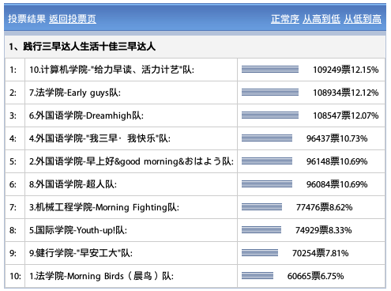

-
KFC“三早达人”刷票
时间: 04/10/2011
简介: 这是一个几乎无任何防范的投票系统。第一次刷票，伪造http请求达到目的。使用C#。

投票地址:http://wzgg.zjol.com.cn/05wzgg/11zt/kfc/index_zdl.shtml
分析日志:http://blog.mckelv.in/articles/1114.html
当时帮朋友刷这个的时候没有写多线程，当时竞争对手似乎也开了不合法的刷票工具，但是速度好像不及我的块，每秒才3票，我们多台电脑开了多个程序最后每秒有23票左右的刷票速度了。据说在最后关头，票数快到1万了，还有其他组最低只有700票的样子，看着数字有点奇怪，那帮家伙就活生生帮他们刷到了7000票。禽兽啊……